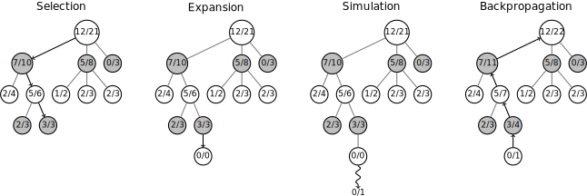

(Enhanced) Tree Search for Combinatorial Problems
General Idea
- Use the tree search algorithm and extend it by a “learning component”.
Overview Tree Search Methods
Tree search algorithms, examples:
- Complete Enumeration
- Breadth/Depth First Search Algorithms
- Partial Enumeration
- Branch&Bound
- Current solution concept is based on this idea, we do not have a “good” bounding function, but due to the problem properties large parts of the search tree are discarded
- Beam search
- expand a certain number of nodes per level of the tree
- Monte Carlo Tree Search for Combinatorial Optimization (Orseau et al. 2018)
- Single-Agent Policy Tree Search With Guarantees (Jooken et al. 2023)
- Branch&Bound
A recent review of applications of MCTS can be found in (Kemmerling, Lütticke, and Schmitt 2024).
Outline of the idea/algorithm (based on the proposal)
Approach/idea is based on Monte Carlo Tree Search (MCTS). It is a heuristic search algorithm which builds a search tree by repeatedly simulating random paths (in the search tree) to estimate the quality of decisions. Through an iterative process balancing exploration (new regions) and exploitation (promising paths), MCTS efficiently identifies good actions from a given node in the search tree.
Schematic representation of the method:

Selection
- Starting at the root node a child node is selected (using some selection strategy)
- The next child node is selected; this is repeated until a node is encountered, where there are unencountered (not yet visited) child nodes
Expansion
- If there are child nodes at the current node, which are not yet visited, expand a child node
Evaluation (or Rollout/Simulation/Playout)
- Walk down a path in the selected child node until a terminal step is reached
Backpropagation
- Update Information
Does it make sense?
We don’t know…
- Processing power
- Generalizability
- Problem instance size
- Number of constraints
- …
Applications in Combinatorial Optimizaion
(Kemmerling, Lütticke, and Schmitt 2024) cites applications in Combinatorial Optimization (p. 1027, Table 7):
- Graph Coloring
- PBQP-based register allocation
- Machine Scheduling, Vehicle Routing
- (Oren et al. 2021) Small problem sizes, they seem to have competitive results
- Bin Packing
- Traveling Salesman Problem
- (Xing, Tu, and Xu 2020) Solve very small problem sizes
- Highest Safe Rung Problem
- Quantified Boolean Formula Satisfaction
Links
Introduction
References
Jooken, Jorik, Pieter Leyman, Tony Wauters, and Patrick De Causmaecker. 2023. “Exploring Search Space Trees Using an Adapted Version of Monte Carlo Tree Search for Combinatorial Optimization Problems.” Computers & Operations Research 150 (February): 106070. https://doi.org/10.1016/j.cor.2022.106070.
Kemmerling, Marco, Daniel Lütticke, and Robert H. Schmitt. 2024. “Beyond Games: A Systematic Review of Neural Monte Carlo Tree Search Applications.” Applied Intelligence 54 (1): 1020–46. https://doi.org/10.1007/s10489-023-05240-w.
Oren, Joel, Chana Ross, Maksym Lefarov, Felix Richter, Ayal Taitler, Zohar Feldman, Christian Daniel, and Dotan Di Castro. 2021. “SOLO: Search Online, Learn Offline for Combinatorial Optimization Problems.” arXiv. https://doi.org/10.48550/arXiv.2104.01646.
Orseau, Laurent, Levi H. S. Lelis, Tor Lattimore, and Théophane Weber. 2018. “Single-Agent Policy Tree Search With Guarantees.” arXiv. https://doi.org/10.48550/arXiv.1811.10928.
Xing, Zhihao, Shikui Tu, and Lei Xu. 2020. “Solve Traveling Salesman Problem by Monte Carlo Tree Search and Deep Neural Network.” arXiv. https://doi.org/10.48550/arXiv.2005.06879.